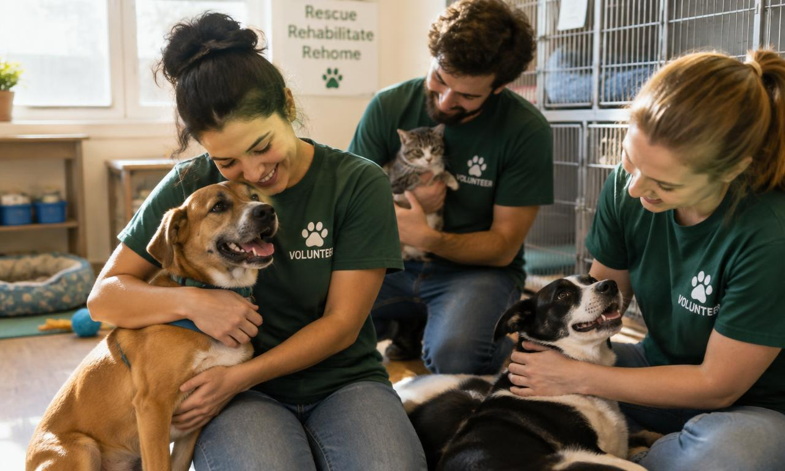

Proteção animal
Todo animal merece um lar e cuidado
A Patas Unidas é uma ONG que resgata, trata e encaminha para adoção cães e gatos abandonados, além de promover a guarda responsável na comunidade.

Nosso impacto
+300 animais resgatados
+180 adoções realizadas
45 voluntários ativos
* Números fictícios para fins acadêmicos.